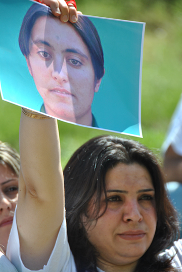
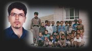

|
|

سفیران صلح کردستان در اوین/ کاوه کرمانشاهی
دو شنبه19 اردیبهشت 1390
تغییر برای برابری - دوستانم زوج جوانی هستند، کنشگر مدنی و فعال در جنبشهای اجتماعی. نشستهایم و گرم گفتوگو در مورد مسائل مختلف که بحث به کردستان میرسد. احزاب کُردی و مبارزه مسلحانه و کسانی که به بهانهی این اتهامات بازداشت و محکوم میشوند. مخالف و منتقد مبارزه مسلحانهاند، من هم کاملاً با آنها همنظرم. اما آنجا که یکی از احزاب کُردی را صرف استفاده از سلاح با سازمانی تروریستی مقایسه میکنند، به هیچ وجه نمیتواند مورد قبولم باشد.

بحث میکنیم. از انگیزههای متفاوت مبارزه نزد دو گروه میگویم. بر اتخاذ شیوهایی مشترک برای مبارزه تأکید میکنند. از نیت و هدف آن جوان کُردی میگویم که فکر و باورش متفاوت است از کسانی که آدم کشی را جهاد و خون ریزی را ثواب میدانند. هر چند قبول دارم که هدف وسیله را توجیه نمیکند و این به معنای تایید این نوع از مبارزه نیست.
از دوستانم جدا میشوم. میدانم مقایسهشان صرفاً از سر تقبیح نوع مبارزه مسلحانه است و خود آگاهند بر ستمی که معلولش اتخاذ چنین روشی برای مبارزه است هر چند به نادرست. اما به راستی ایجاد تغییری در افکار شهروندان و کنشگران ایرانی لازم است، تا آن تصویری که حاکمیت از کُرد به عنوان کسانی که سر میبرند و ترور میکنند در ذهنشان ایجاد کرده دگرگون شود.
ـ ـ ـ
محارب و تروریست، اتهام و انگ سیستم قضایی و امنیتی حاکمیت ایران است برای فعالان سیاسی کُرد که بعضاً سابقهی همکاری یا عضویت در یکی از احزاب اپوزیسیون کردستان را نیز دارند. جدای از اینکه تعاریف شرعی ـ حقوقی و سیاسی از محارب و تروریست در قوانین و ادبیات جمهوری اسلامی تا چه اندازه با تعاریف واقعی آن همخوانی دارد، باید به این مهم توجه داشت که چنین اتهام زنیها و نام گذاریهایی علاوه بر اینکه توجیه نیمبند حقوقی برای صدور احکام اعدام را به دنبال خواهد داشت، میتواند تأثیری منفی بر ذهنیت شهروندان و فعالان ایرانی یا حتی در عرصهی بینالمللی که کمترین شناخت را از جامعهی کردستان و مطالبات و مبارزات این ملت دارند بگذارد.

در واقع حاکمیت ایران با مطرح نمودن و نسبت دادن چنین اتهامات و القابی میخواهد تا ضمن نشان دادن چهرهایی غیرواقعی و خشونتآمیز از جنبش کردستان و فعالان کُرد، فضای امنیتی حاکم بر مناطق کردنشین ایران را توجیه کند. از سوی دیگر با معرفی زندانیان سیاسی کُرد به عنوان تروریست و طرح اتهامات سنگین علیه آنان ضمن کاستن از پشتیبانی فعالان و نهادهای حقوق بشری از ایشان، افکار عمومی را نیز در واکنش به چنین مواردی وادار به سکوت نماید.
سابقهی حاکمیت در استفاده از این روش به همان ماههای نخست پس از پیروزی انقلاب اسلامی باز میگردد. در آن زمان حکومت موازی با جنگ نظامی در کردستان جنگی تبلیغاتی در وارونه نشان دادن مطالبات ملت کُرد و علیه احزاب کُردی به عنوان مطرح کنندگان این خواستها در آن دوره تاریخی به پیش برد. حتی پس از پایان جنگ نیز با حفظ و تشدید فضای امنیتی در مناطق کُردنشین همچنان این جنگ تبلیغاتی در اشکال و انواعی دیگر ادامه یافت.
***
شیرین و فرزاد! چطور شما را تروریست معرفی کردند وقتی هر بار که کسی با شما آشنا شد جز عشق و زندگی در شما ندید؟ تروریست آنها هستند که هر بار به نام قانون، انسانیت را ترور می کنند.
***
در گذر از آن سالها اگر چه در تبلیغات رسمی و ظاهری حکومتی و حتی اپوزیسیونی کُردان گُرد اصیلترین ایرانیان معرفی شدند و پاسداران یکپارچگی ایران زمین! اما همچنان حقخواهی ملت کُرد با انگ تجزیه طلبی پاسخ داده شد و فعالان حقخواه کُرد نیز خائنان به وطن معرفی کشتند. زمانی هم که پای احزاب در میان بود محارب و تروریست نیز اضافه میشد به سیاههی متهمان وابستگی به این احزاب.
واقعیت تلخ اینکه در تمامی این سالها متأسفانه هيچ صدای رسای اعتراضی از سوی فعالان ایرانی در واکنش به تبعیض همه جانبه علیه کُردها برنخواست و شهروندان ایرانی نیز در سکوت به تماشای سرکوب هممیهنانشان نشستند. اما طی سالهای اخیر با شکلگیری و تقویت نهادهای مدنی و جنبشهای اجتماعی در دوره موسوم به اصلاحات در ایران و به تبع آن کردستان و ارتباط و همکاری که بین افراد فعال در این نهادها و جنبشهایی مثل دانشجویی، کارگری، زنان و... در سطح کشور پدید آمد تا حدودی توانست در تغییر آن ذهنیت سنتی که از طرف حکومت علیه فعالان کُرد به فعالان مرکز القاء شده بود تأثیر داشته باشد.
همچنین ورود و گسترش گفتمان حقوق بشری به حوزه بحث کنشگران و ارزش قرار گرفتن و اولویت دادن به اصول و معیارهای حقوق بشری در فعالیتهای اجتماعی و حتی سیاسی توانست مسئلهی حقوق ملتها و اقوام ایرانی از جمله کُردها را نیز در این چهارچوب مورد خوانش و بررسی دوباره قرار دهد. هر چند هنوز فاصله تا تغییر فکری و التزام عملی به ادعاهایی که در این زمینه مطرح میشود بسیار است.
هر روز و هر روز آن سخن کاک فرزاد در آخرین تماس تلفنیمان در گوشم نجوا میکند که: حقوق بشر مرز ندارد. باید مرزها را برداریم. این وظیفهی ماست. من از زندان و شما در بیرون.
اگر از تغییر استراتژی مثبت عمده احزاب کُرد از مبارزه مسلحانه به فعالیت سیاسی و همچنین تأثیرات جنبش سبز به عنوان گستردهترین حرکت اعتراضی به عنوان عواملی در جهت نزدیکتر شدن فعالان و جریانهای منتقد و معترض از گروههای مختلف با افکار متفاوت به یکدیگر در حد همین اشاره کوتاه بگذریم در ادامه به عاملی دیگر خواهیم پرداخت که در پیوند مستقیم با عنوان انتخابی این نوشتار و در تجلیل از جانباختگان نوزدهم اردیبهشت است.
ـ ـ ـ
نامههایی که از آن سوی دیوارهای بلند و اتاقهای تاریک میآیند رنگ صلح دارند و بوی آشتی میدهند. هر چند روایتشان درد یک ملت است و رنج یک زندانی. بسیاری فرزاد و شیرین را با همین نامهها شناختند، اما کسان دیگری هم بودند که پشت آن دیوارهای بلند و در آن اتاقهای تاریک با آنها همخانه و همدم شدند. و روزی آمد که اینان از ایشان روایت کردند. روایت حق یک ملت و بزرگی یک زندانی.
آن چهره خشن از مبارز کُرد، آن اتهامات و آن القاب همیشگی در این نامه نگاریهای دو سویه گم میشود. تروریست کیست؟ آنکه چنین زیبا از عشق انسان میگوید میتواند تروریست باشد؟ فرزاد زیبا مینویسد. شیرین نوآموخته، مشق نوشتن میکند. فرهاد کمتر مینویسد و علی سکوت را انشا میکند.
زندان و شکنجه و حکم اعدامی که قرار بود ارادهشان را بشکند و از جامعه و آرمانی که دارند دورشان کند. شده است محلی برای فعالیت، بهانهایی برای نوشتن و عاملی برای همدلی. در پی روزهای انفرادی، سلول یا بند عمومی است، و آشناییها و دوستیهایی که شاید چند روز و شاید هم چند ماه ادامه مییابد. اما همین با هم بودنهای کوتاه کافیست تا آن تصویر ناشی از تبلیغات منفی درباره فعال کُرد نزد فعال غیرکُرد که اینک هر دو در پی خشونت دولتی و اتهامات ساختگی روانهی زندان شدهاند دگرگون شود.
به راستی نقشی که امثال فرزاد و شیرین در راستای همگرایی و همدلی بین فعالان کُرد و سایر ملیتها در زندان ایفا نمودند نقشی استثنایی و تاریخی بود که هم اتهام محارب و تروریست را در موردشان بیآبرو ساخت و هم تابوی دفاع از زندانی سیاسی کُرد را نزد فعالان ایرانی شکست. یعنی همان چیزی که حاکمیت سالها در ایجاد و تداومش کوشیده بود.
واقعیتی انکارناپذیر و قابل ستایش است پشتیبانی گسترده فعالان ایرانی از فرزاد و شیرین. چه در غالب کمپینهای حمایتی در زمان حیات دربندشان و چه نامهها و اعتراضهای گسترده پس از مرگ در اوجشان. کدام اعدام را در سالهای اخیر سراغ دارید که تا به این اندازه اعتراض و همدلی را در کردستان و سایر نقاط ایران و حتی عرصهی بین المللی به دنبال داشته باشد.
این تنها از اوج ناعدالتی و سبوعیت حکومت نبود که در حق فرزاد، شیرین، فرهاد، علی و مهدی روا گردید. این تنها از بزرگی شخصیت این افراد نبود که هر کس را شیفتهی خودشان میساختند. این از بزرگی آرمانی بود که آنها داشتند. آرمانی که برایش مبارزه کرده بودند و رنج زندان و شکنجه را تا پای چوبهی دار بر دل و جان کشیدند. آرمان آزادی و صلح برای ملتشان. آری آنان سفیران صلح کردستان بودند در اوین. آنان منادیان همگرایی کُرد با دیگر ملتهای ایرانی بودند در رسیدن به دمکراسی. هر روز و هر روز آن سخن کاک فرزاد در آخرین تماس تلفنیمان در گوشم نجوا میکند که: حقوق بشر مرز ندارد. باید مرزها را برداریم. این وظیفهی ماست. من از زندان و شما در بیرون.
همهی بزرگی و خوبی آن انسانها و تأثیری که در تغییر نگاهها نسبت به فعال و مبارز کُرد از آنچه حکومت همواره سعی داشته به عنوان یک خشونت طلب و تروریست معرفی کند به انسانی آرمان خواه که دغدغهی آزادی دارد و صلح، تنها در نامههایی نیامده که در چهاردیورای زندان نوشته میشدند و ما آنها را از پشت مانیتورهای کامپیوترمان با چشمانی تر میخواندیم. بزرگی شخصیت و آرمان انسانی فرزادها و شیرینها را از نامهها و گفتههای کسانی گواه باید گرفت که آنها را زندگی کردهاند.
ـ ـ ـ
دوستانم که زندگی خود را تازه شروع کرده بودند به دلیل فعالیتهای مدنیشان بازداشت و پس از مدتی آزاد شدند. به دیدنشان میروم. بدون اینکه بحثی در این مورد کنیم پرواضح است که هنوز و همچنان همنظریم در مخالفت با خشونت و هرگونه اقدام مسلحانه، اما این بار فعال کُردی که به اتهام عضویت یا همکاری با احزاب اپوزیسیون یا هر مورد مشابه دیگری بازداشت شده و با عنوان محارب و تروریست زیر حکم اعدام است، نزدشان همتراز وابستهی آن سازمان تروریستی نیست که خشونت را مقدس میانگارد.
نشستهایم و گرم گفتوگو. حالا همهی حرفها با دو نام آغاز میشود و با همان دو نام خاتمه مییابد. حالا همهی خاطرات زندان در دو نام برایشان تداعی میشود. شیرین و فرزاد. حالا آنها هستند که بیش از هر کسی دغدغهی نجات جان فرزادها و شیرینها را دارند. حالا آنها هستند که در سوگ شیرین و فرزاد مینویسند: راستی چطور شما را تروریست معرفی کردند وقتی هر بار که کسی با شما آشنا شد جز عشق و زندگی در شما ندید؟ تروریست آنها هستند که هر بار به نام قانون، انسانیت را ترور می کنند.
آری فرزادهاٰ، شیرینها، فرهادها، علیها، مهدیها و احسانها سفیران صلح بودند نه منادیان خشونت...